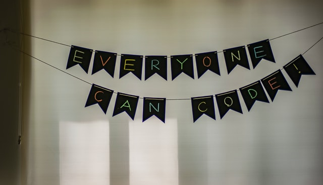

While-løkker
Contents
While-løkker¶
Nå skal du lære å bruke while-løkker. Det er løkker der Python gjør ulike beregninger så lenge en betingelse er oppfylt.
a = 1
sum = 0
Så lenge a er mindre enn 10:
adder a til sum
øk a med 1
skriv ut sum
Her ser du at det setter opp en betingelse i tredje linje: så lenge a er mindre enn 10. Siden a i utgangspunktet er 1, så er dette sant. Sum vil derfor få en ny verdi 0+1=1 og a øker til 2. Da er fremdeles a mindre enn 10, så vi addere a til sum og får sum = 1+2=3 og a blir lik 3. Slik fortsetter vi så lenge a er mindre enn 10. Resultatet blir at sum får verdien sum = 1+2+3+4+5+6+7+8+9 = 45.

Vi har tidligere sett på løkker av typen
for i in range(1, 11):
s = s + i
I slike løkker gjennomløper tallet «i» alle tallene som er spesifisert av range-kommandoen. En annen type løkke som er nyttig å bruke er såkalte while-løkker. I en while-løkke vil en kode gjentas så lenge en betingelse er sann:
while betingelse:
kode som kjøres så lenge betingelsen er sann.
Eksempel 1¶
I filmen nedenfor viser vi hvordan vi kan bruke en slik løkke til å printe ut alle kvadrattallene mindre enn 200.
Oppgave 1¶
Bruk Python til å bestemme hvor mange kubikktall som er mindre enn 1000. Husk at kubikktallene er tallene \(1^3, 2^3, 3^3, \ldots\).
Du kan lage programmet her:
Løsning:
Eksempel 2¶
Anna vil spare penger og skal hvert år sette 1000 kroner inn på en konto med fast rentefot lik 2,0%.
Hvor mange år vil det gå fra hun setter det første beløpet inn på kontoen til hun har mer enn 30000 kroner på kontoen?